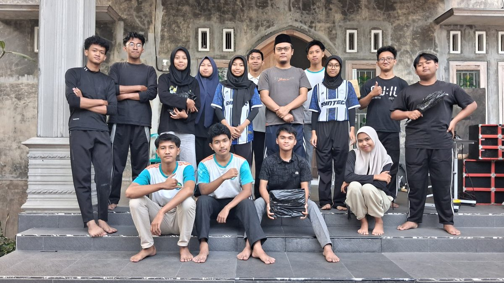
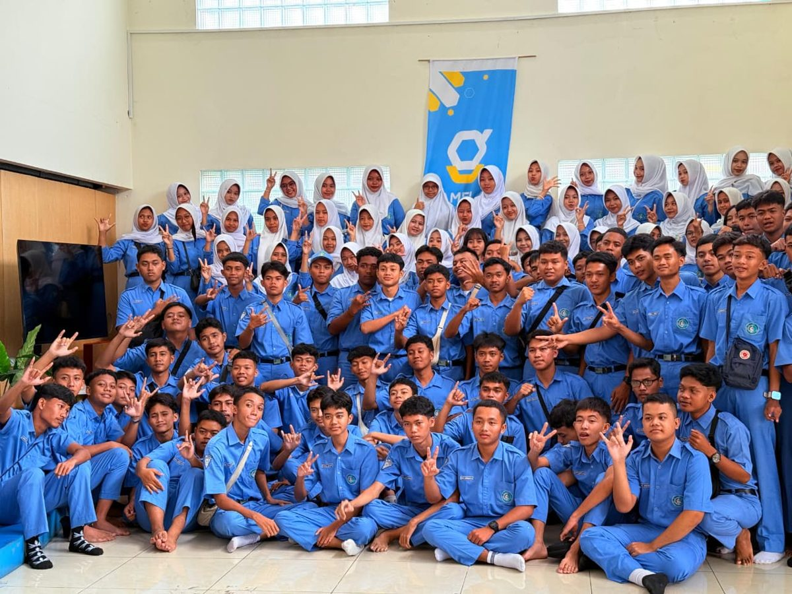

Jabatan / Status
Siswa aktif kelas XII Rekayasa Perangkat Lunak sekaligus peserta uji kompetensi skema Junior Web Developer.
Junior Web Developer & Siswa Rekayasa Perangkat Lunak
“Belajar, berkarya, lalu berbagi — satu baris kode setiap hari.”
Siswa Rekayasa Perangkat Lunak di SMK Negeri 1 Jenangan yang tertarik pada pemrograman, pengembangan web, dan game development.

Saya siswa SMK Negeri 1 Jenangan jurusan Rekayasa Perangkat Lunak dengan ketertarikan pada pengembangan perangkat lunak, pemrograman, dan teknologi informasi. Bidang yang saya tekuni saat ini adalah pengembangan web (front-end dan back-end sederhana) serta pembuatan game 2D. Saya berkomitmen terus belajar dan siap berkontribusi secara positif di lingkungan kerja profesional.
Siswa aktif kelas XII Rekayasa Perangkat Lunak sekaligus peserta uji kompetensi skema Junior Web Developer.
SMK Negeri 1 Jenangan, Jl. Niken Gandini No. 98, Setono, Jenangan, Kabupaten Ponorogo, Jawa Timur.
Pengembangan website (HTML, CSS, JavaScript, PHP, MySQL), pengembangan game 2D dengan Construct 3, serta analisis kebutuhan dan perancangan basis data.
Bergabung di tim pengembangan game. Mengerjakan mekanik permainan, pengujian, dan perbaikan bug pada game puzzle berbasis grid menggunakan Construct 3.
Membangun website usaha rajut secara mandiri: katalog dari database, pencarian dan filter kategori, keranjang belanja, checkout dengan validasi form, hingga panel admin ber-login untuk CRUD produk dan pengelolaan pesanan.
Latihan membangun antarmuka aplikasi dan halaman produk yang responsif menggunakan HTML, CSS, dan JavaScript dasar.
Persentase di bawah adalah penilaian diri sendiri terhadap tingkat penguasaan saat ini.
Game puzzle berbasis grid dengan sistem drag & drop, perhitungan skor, penyimpanan best score, dan efek bom horizontal/vertikal.
Website dinamis toko rajut: katalog produk dari database, pencarian, keranjang, checkout dengan validasi, transaksi, serta dashboard dan laporan penjualan untuk admin.
Kunjungi websiteLatihan membangun antarmuka aplikasi dan website produk yang rapi, konsisten.
Menyelesaikan program PKL di CV Blitaris Tekno pada bidang pengembangan game menggunakan Construct 3.

Dokumentasi kegiatan selama menjalani Praktik Kerja Lapangan (PKL) di CV Blitaris Tekno, sebagai bentuk pengalaman nyata dalam dunia kerja.

Mengikuti kegiatan Kunjungan Industri sebagai sarana untuk mengenal secara langsung dunia kerja di bidang teknologi serta menambah wawasan mengenai penerapan ilmu yang dipelajari di sekolah.
Langkah paling dasar sebelum membuat website dinamis: membuat koneksi, menangani error, dan mengatur charset agar huruf tidak berantakan.
Saya biasa memisahkan koneksi ke file config/database.php supaya tidak ditulis berulang di setiap halaman. Di dalamnya cukup buat objek mysqli, cek connect_error, lalu panggil set_charset('utf8mb4') agar emoji dan huruf beraksen tetap tampil benar. Setelah itu halaman lain tinggal memanggil require satu kali saja.
Pelajaran penting yang saya dapat: jangan pernah menyambung query langsung dari input pengguna. Gunakan prepared statement supaya aman dari SQL injection.
Keranjang belanja tidak harus langsung disimpan ke database. Untuk toko kecil, session PHP sudah cukup dan jauh lebih mudah dipahami.
Idenya sederhana: simpan data keranjang sebagai array $_SESSION['cart'] dengan bentuk [id_produk => jumlah]. Saat produk ditambahkan, jumlahnya ditambah; saat dihapus, key-nya di-unset. Harga produk tetap diambil dari database supaya pembeli tidak bisa memalsukan harga dari sisi browser.
Barulah pada saat checkout data dipindahkan ke tabel orders dan order_items di dalam satu transaksi, sekaligus mengurangi stok produk.
Cerita singkat selama PKL di CV Blitaris Tekno, mulai dari tidak tahu apa-apa sampai bisa menyelesaikan satu game puzzle.
Hal tersulit di awal bukan soal tools, tapi memecah masalah besar menjadi bagian kecil. Sistem grid, deteksi baris penuh, perhitungan skor, dan efek bom saya kerjakan satu per satu, masing-masing diuji dulu sebelum digabung.
Dari sana saya belajar bahwa kebiasaan memberi nama variabel yang jelas dan merapikan susunan file sangat menolong ketika proyek mulai membesar — kebiasaan yang saya bawa juga ke proyek web ini.
Silakan hubungi saya melalui email atau WhatsApp untuk diskusi proyek, kerja sama, atau sekadar bertanya soal karya di halaman ini.